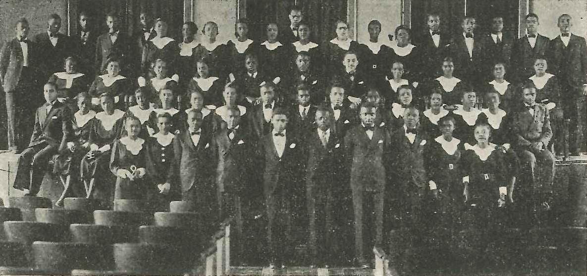

1935-1936 Dillard University Chorus
The inaugural choir directed by Professor Frederick Hall.
Below is an article printed in the 1936 edition of the Dillard University newspaper, the Courtbouillon. The University Choir was founded in 1935, the same year Dillard University was.

![Dillard Singers Return From Successful Tour, Louisiana Weekly, May 30, 1936.
The Dillard University Chorus under the direction of Professor Frederick Hall, has just returned
from its first annual tour. The feature presentation of the thirty-eight voice aggregation was the histori-
cal pagent of the development of the spirituals from Africa to the present day in America, entitled
Heritage.
The Dillard Singers appeared before capacity houses in Meridian, Mississippi; Birmingham, and
Montgomery, Alabama; Nashville and Chattanooga, Tennessee; Louisville, Kentucky, and at Wilberforce
Universtiy and the Methodist Episcopal Church Conference at Columbus, Ohio. At Columbus and Montgomery
the over flowing crowd left standing room only.
Those making the tour were: Misses Ontee Cain, Florice Brazley, Doris Daniels, Modilie Deloach,
Elma Freeman, Eugenia Fletcher, Margaret Franklin, Oralee Hereford, Eugenia Jackson, Mable Ward,
Helen Wilderson, Cora Mae Allen, Gladys Bellinger, Mary Evans, Mertie Farrar, Freda Johnson, Gladys
Jones, Elaine Owens, Laura Burnbull, Hazel Ward, Messrs. James Brown, Ramsey Bridges, Lawrence
Carter, Traverse Crawford, Fred Dillon, James Frankin, Arthur Maytag, Elmaurice Miller, Joseph Adkins,
John Buggs, Kacillious Bridges, Harry Lewis, Otho Gaines, Lloyd Sandle and Oliver Conway.](images/1st Season Tour.jpg)
A brochure from 1935 about the first season of the choir